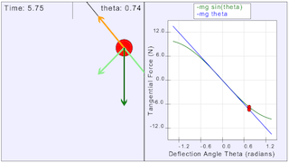

This illustration compares the simple harmonic motion of a mass on a spring to the motion of a pendulum. At small angles (θ much smaller than 1), a pendulum can be modeled by simple harmonic motion, and mirrors the motion of a mass on a spring. However, this is not the case when there is a large displacement of the pendulum.